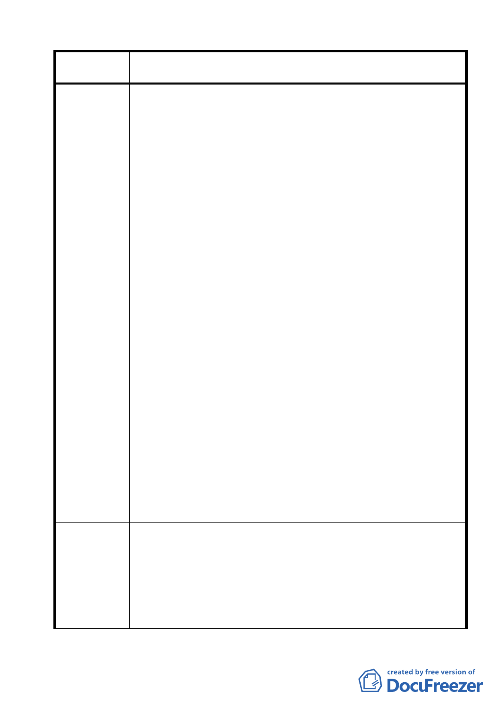

案名
建議辦法
變更臺北市士林區陽明山山仔后地區第二種住宅區為特定住宅區
細部計畫案
所謂「公共性的提升與增進社會利益」指的是什麼？
（2）計畫書第 9 頁;「變更計畫內容」的第 2 項「土地使用分區
管制」，第 2 條款放寬「特定住宅區一」(前美軍社區)的地目;
新增使用的項目有 : 寄宿住宅，人民團體，飲食業，餐飲業，
自由職業事務所，一般旅館業， 一般事務所等 7 大項目。
（3）在文化資產尚未定案，計畫書也未提出公共設施區， 逕自
貿然放寬地目，只會幫助財團解套，讓他們不費吹灰之力將
住宅區建成商業區使用，到時增進 何者的利益? 社會大眾還
是財團?都發局應在計畫書中做更具體嚴格的規定與說明，否
則將背負著賤賣國土的污名! 都發局活絡地區發展的美意會
變質為活絡開發商的銀行存款。（據調查格致路兩邊的商店
用地高達百萬一坪）。
2.根據以上 3 點，計畫書的內容有違許局長的聲明，也同時違反
變更山仔后地區細部計畫的法令依據（都市計畫法第 27 條第 1
項第 4 款），所謂「重大設施」，應該不是指將歷史保存價值的
地區開發成 200 多戶豪宅區（計畫書第 17 頁，規定面積單元以
不大於 400 平方公尺，約 120 坪），或餐旅業區，甚至商住混合
區。
3.去年山仔后文史工作室與其他參與保存的團體和個人， 作了 16
個草案給都發局與文化局，是在山仔后美軍社區全面保留的大
前提下，也就是，保存再利用的方式下作地目變更，是希望多
種用途的構想可以鼓勵政府考量保留這珍貴的歷史地區，不至
流於剷除開發的慘境，沒想到，文化局遲遲不作決定，都發局
由 16 個草案中得到靈感，竟然本末倒置，在美軍宿舍一棟都尚
未登錄保存下，竟先在「土地使用分區管制」這項作了前所未
有的大放寬計畫。
4.這個計畫書最讓人詬病的是，從第一頁到最後一頁，都在談美
軍宿舍保存的重要，也讓人以為美軍宿舍可以保存了，實際上，
歷史建物的保存只是「清談」，成為遮掩放寬地目的煙霧彈 !
1.計畫書第 7 頁「變更使用分區」，將美軍社區 15.81 公頃的地，
由第二種住區改為「特定住宅區一」，變更的理由是:原美軍宿舍
尚存且街廓完整者，其特殊地景宜與保存維護與再利用。
2.計畫書應根據上述所依據的法令，變更的理由，及許志堅局長
對外聲明的內容，重新擬定「土地使用分區管制」; 將使用地目
放寬（新增的七個項目）的地區 限定於未來劃定公告的「山仔
后地區美軍宿舍保護地區」。
23